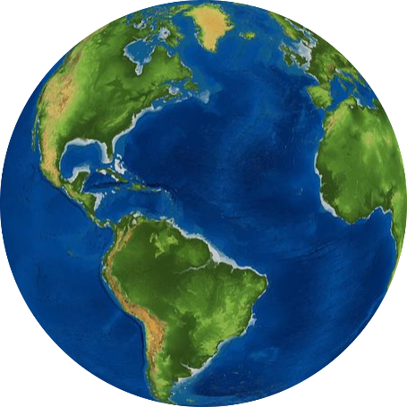

Introdução
No mundo nós temos seis grandes continentes, são eles: África, Ásia, Europa, Oceania, América e Antártida. Quanto aos Oceanos, temos: Oceano Pacífico, Oceano Atlântico, Oceano Índico e Oceano Ártico. Vamos ver um pouco sobre cada um desses Continentes e Oceanos
continentes: África
A África é o teceiro meior continente em questão territoria do mundo, ocupando mais ou menos 20% da área mundial. O continente africano é conhecido pela sua diversidade cultural e étnica e pela sua biodiversidade, porém Os países africanos possuem baixos indices de desonvolvimento humano, com diversos problemas socias como o anafabetismo, extrema pobreza, como consequência a baixa qualidade de vida. Os países africanos dividem-se em duas principais regiões: o Norte da África e a África Subsaariana e se distribuem em:"África Central, África Meridional, África Setentrional, África Ocidental e África Oriental. A África é composta por 54 países, sendo 48 continentais e 6 insulares.

continentes: Ásia
A Ásia é o maior continente do mundo e também o mais populoso. Há 3/5 da população mundial aporximadamente. É um continente bastante diverso com diversos rios,montanhas e grandes desertos, além de diversos climas, relevos e variedades hidrografica significativa e também aprensenta grandes cordilheiras como a do Himalaia. A Ásia também é o berço das civilizações antigas e também é onde nasceram diversas religiões como o islamismo e o cristianismo. O PIB do continente chega à 12,24 trilhões de dólares, também apresenta uma grande diversidade cultural. O continente Ásiatico possui 49 países e alguns considerados transcontinentais (localizados em mais de um continente).

continentes: Europa
A Europa é o segundo menor continente em quesito territorio e o quarto mais populoso. Na Europa são faladas 60 linguas. Seu maior país é a Rússia e o menor é o vaticano. A Europa possui 4 divisões, são elas: Europa Ocidental, Europa Meridional, Europa Centro-Oriental e Europa Setentrional. A europa sempre foi o centro do mundo no quesito de ser o centro econômico, A Europa tem grandes econômias mundiais como a Alemanha (quarta do mundo) Reino Unido (quinta do mundo) França (sexta do mundo) e a Itália (oitava do mundo). A Europa tem o clima temperado predominante e devido a sua posição geografia ela é banahda por diverosos mares. A vegetação da Europa pode ser encontrada a Tundra, nas áreas de baixas temperaturas e também a Taiga, vegetação predominante no continente. A Europa é formada por 50 países sendo q o Reini Unido é formado por 4 nações constitunintes e oito dependências.